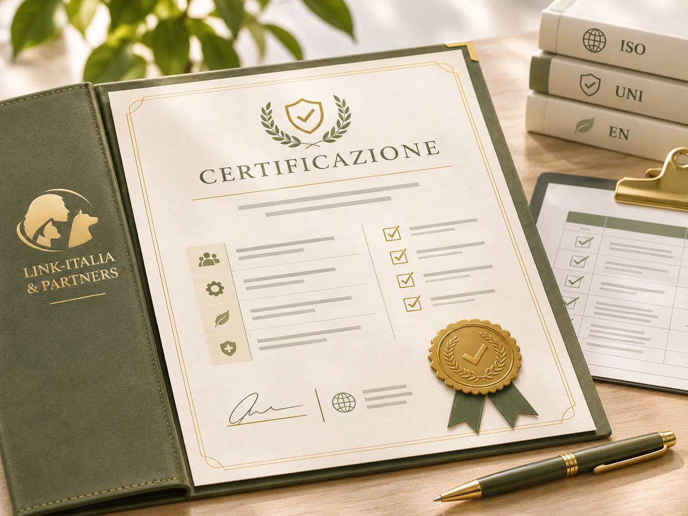

THE LINK
Comprendere la correlazione tra violenza su animali, violenza interpersonale e altre condotte devianti per promuovere risposte coordinate.
Approfondisci 01Formazione, certificazioni e reti di competenze per la prevenzione della violenza, la tutela delle persone e degli animali e lo sviluppo di comunità più sicure, sane e consapevoli.
La prevenzione si costruisce collegando conoscenze, responsabilità e azioni concrete.
Comprendere la correlazione tra violenza su animali, violenza interpersonale e altre condotte devianti per promuovere risposte coordinate.
Approfondisci 01Riconoscere le connessioni tra la salute umana, il benessere animale e la sostenibilità degli ecosistemi.
Approfondisci 02Coltivare una cultura della protezione e della prevenzione nei contesti professionali, educativi e sociali.
Approfondisci 03Un approccio multidisciplinare con percorsi formativi e standard di certificazione rivolti a professionisti e organizzazioni.

Scopri le possibilità formative e richiedi informazioni sui percorsi di certificazione.